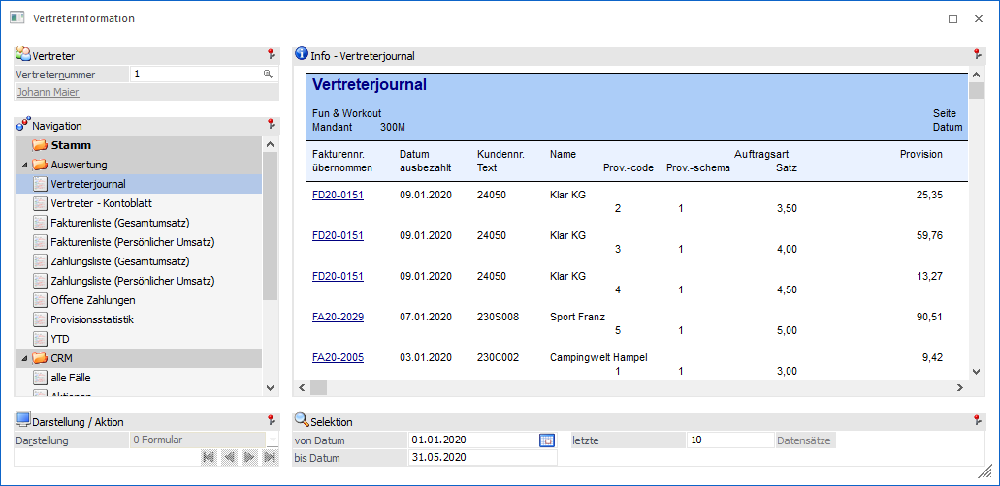
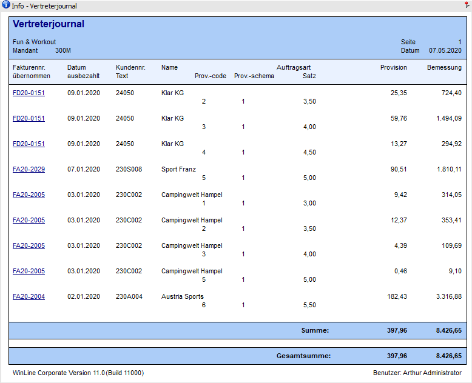
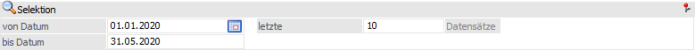
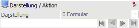

Der Bereich "Auswertung" ist in 8 Ansichten unterteilt:
ü Vertreterjournal
ü Vertreter - Kontoblatt
ü Fakturenliste (Gesamtumsatz)
ü Fakturenliste (Persönlicher Umsatz)
ü Zahlungsliste (Gesamtumsatz)
ü Zahlungsliste (Persönlicher Umsatz)
ü Offene Zahlungen
ü Provisionsstatistik
ü YTD

Die Ansichten bestehen aus den folgenden Info-Elementen:
ü Info
ü Selektion
ü Darstellung / Aktion
Info

An dieser Stelle werden die Infos, gemäß der nachfolgenden Selektion, dargestellt.
ü Ansicht "Vertreterjournal"
Im
Vertreterjournal werden alle Fakturenzeilen, aufgesplittet auf die einzelnen
Provisionscodes, angezeigt. Neben dem jeweiligen Provisionscode werden auf dem
Vertreterjournal z.B. auch die eigentliche Provision die Bemessung sowie das
Provisionsschema angeführt.
ü Ansicht
"Vertreter-Kontoblatt"
Auf dem Vertreterkontoblatt werden alle
provisionsrelevanten Fakturenzeilen pro Vertreter/Vertretergruppe
ausgewiesen.
ü Ansicht "Fakturenliste
(Gesamtumsatz)"
Diese Liste enthält alle Fakturen die im angegebenen Zeitraum
liegen wobei sowohl jene Fakturen enthalten sind für die der eigentliche
Vertreter hinterlegt ist, als auch jene bei denen er durch seine Hierarchiestufe
bzw. Vertretergruppe beteiligt ist. Diese Liste wird aufgrund des
Vertreterjournals generiert.
ü Ansicht "Fakturenliste
(Persönlicher Umsatz)"
Diese Liste enthält jene Fakturen aus dem angegebenen
Zeitraum für die der "eigentliche" Vertreter selbst hinterlegt war (die Liste
kann natürlich auch pro Vertretergruppe ausgegeben werden). Diese Liste wird
aufgrund des Vertreterjournals generiert.
ü Ansicht "Zahlungsliste
(Gesamtumsatz)"
Diese Liste enthält alle übernommenen Fakturen die im
angegebenen Zeitraum liegen wobei sowohl jene Fakturen enthalten sind für die
der eigentliche Vertreter hinterlegt ist, als auch jene bei denen er durch seine
Hierarchiestufe bzw. Vertretergruppe beteiligt ist. Diese Liste wird aufgrund
des Provisionsübernahmejournals generiert, wobei für die
Datumseinschränkung das Übernahmedatum herangezogen wird.
ü Ansicht "Zahlungsliste
(Persönlicher Umsatz)"
Diese Liste enthält jene (übernommenen) Fakturen aus
dem angegebenen Zeitraum für die der "eigentliche" Vertreter selbst hinterlegt
war (ebenso kann die Liste für den "persönlichen Umsatz" einer Vertretergruppe
ausgegeben werden). Diese Liste wird aufgrund des
Provisionsübernahmejournals generiert, wobei für die Datumseinschränkung
das Übernahmedatum herangezogen wird
ü Ansicht "Offene Zahlungen"
Hier
werden alle offenen Posten aufgelistet, die für den Vertreter von Relevanz sind
bzw. die in der Finanzbuchhaltung bereits (teil-)ausgeglichen sind und daher für
die Auszahlung relevant sind.
ü Ansicht
"Provisionsstatistik"
Die Provisionsstatistik enthält alle übernommenen
Provisionsbeträge nach Vertreter und Provisionscode summiert. Zur Anzeige kommen
auch die verschieden möglichen Provisionsschemata. Als Grundlage für diese
Auswertung wird das Übernahmejournal herangezogen.
ü Ansicht "YTD"
In der Ansicht
"YTD" werden die Informationen "Menge", "Umsatz" und "Rohertrag" des Vertreters
ausgegeben. Die Abkürzung "YTD" steht hierbei für "Year-to-Date" und
bedeutet, dass die Werte des aktuellen Jahres mit denen des Vorjahres verglichen
werden, wobei ein Stichtag vorgegeben ist. Dieser Stichtag ermittelt sich
automatisch aus den Elementen "aktueller Tag", "aktueller Monat" und "aktuelles
Wirtschaftsjahr".
Beispiel
Die Vertreterinformation wird am 04.05.2020 geöffnet, wobei im Wirtschaftsjahr 2018 gearbeitet wird. In diesem Fall wird der Stichtag mit dem 04.05.2018 vorbelegt.
Selektion

In diesem Bereich kann für alle Ansicht (außer "YTD") definiert werden, welche bzw. wie viele Datensätze dargestellt werden sollen. Die Angabe der Datensätze wird übergreifend für alle Ansichten benutzerspezifisch gespeichert.
Ø Datum von / bis
An dieser Stelle kann der Zeitraum hinterlegt werden, welcher ausgewertet werden soll. Hierbei wird standardmäßig der aktuelle Monat vorgeschlagen.
Ø letzte x Datensätze
Hier kann definiert werden, wie viele Datensätze (Belege, Zahlungen, etc.) angezeigt werden sollen.
Darstellung / Aktion

Ø  VCR-Buttons
VCR-Buttons
Sollte die Anzeige über mehrere Seiten dargestellt werden, dann kann mit Hilfe der VCR-Buttons zwischen den einzelnen Seiten gewechselt werden.